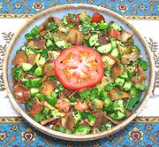

|
Fattoush SaladLebanon - Fattoush | ||||
| Serves: Effort: Sched: DoAhead: |
5 salad ** 45 min Most |
This very popular salad is known in the region as a "peasant salad", probably because it uses bread rather than meat and traditionally includes chickweed, a common weed. | |||
|
|
2 ar 12 14 5 1/2 1/2 1/4 1 ------ 1 1/2 1/4 1/4 1/8 ------ |
7" oz oz oz c c c c --- cl t c c t --- |
Pita Bread Olive Oil ExtV Cucumbers (1) Tomatoes Bell Pepper, grn Scallions Parsley Mint, fresh Chickweed (2) -- Dressing Garlic Salt Lemon Juice, Olive Oil ExtV Pepper, black -------- |
Make - (45 min)
|